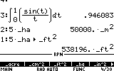
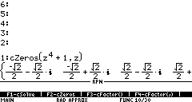

Download Area
RPN Interface
by Lars Frederiksen
Please, do not spread this program other sites without permission of the author.
| Software: RPN | ||||
Last updated: September 24, 2000. |
||||
Author's name: Lars Frederiksen |
||||
Description: RPN is an interface program which lets you operate a TI89 or TI92+ calculator using an RPN interface, instead of the normal algebraic interface. RPN is a stack-based interface, which is often faster to use than algebraic entry, especially for complicated expressions. RPN is an acronym for reverse Polish notation, which describes the method used to enter operators and operands. RPN has been written for TI calculator users who prefer an RPN interface, or for those who want to learn to use RPN. The version 2.022 features the following changes since previous version 2.021:
|
||||
Screen shots |
||||
|
TI-89  TI-92Plus  |
||||
Specifications:
Includes versions to run in TI-89 and TI-92+. |
||||
|